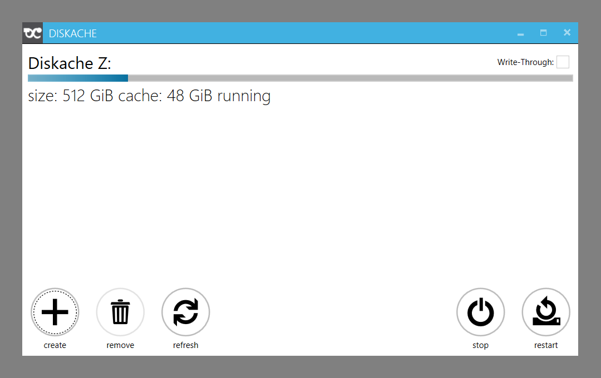

Download Diskache RC2
If you are updating from previous Diskache beta, please, stop all the programs, that might use cached disks prior to installation. RC2 Setup forcibly disconnects all Diskache disks during update.
Download Setup Diskache RC2 license is valid until mid September 2017. After that you will need to buy release. Free Beta program will end in August 2017. Retail price will be anounced later this summer.
Updating Diskache betas
- Stop all the programs, that use Diskache disks
- Run setup
- In the unlikely event, that you will experience any issues with your existing disks after upgrade, report the problem to contact@diskache.io
Limitations
- Windows can not be booted from virtual disks created by Diskache
- Some programs might not work as expected when installed to a virtual disk
- Some programs might not work with files, stored on a virtual disk
- Swap files and hibernating Windows to a virtual disk is not supported
-
Minimum requirements:
- Prototype-level performance: Windows XP Home Edition or Windows Server 2003
- Advanced-level performance: Windows 7 or Windows Server 2008 R2